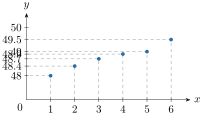
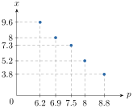
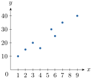
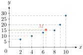
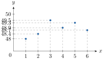
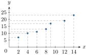
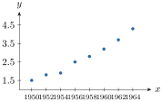

- កំណត់និយមន័យនៃស្ថិតិមានពីរអថេរ
- បកស្រាយស្ថិតិមានពីរអថេរជាចំណុច (ក្រាបពពកចំណុច)
- រកចំណុចមធ្យមនៃស្ថិតិមានពីរអថេរ
- រកសមីការបន្ទាត់មួយ ដែលនៅជិតចំណុចទិន្នន័យ ។
1. សញ្ញាណស្ថិតិមានពីរអថេរ
1.1. ឧទាហរណ៍
ឧទាហរណ៍ 1 : តារាងខាងក្រោមបង្ហាញពីម៉ាសនិងកម្ពស់ទារកម្នាក់ៗក្នុងចំណោមទារក \(\displaystyle 6\) នាក់ ក្នុងមន្ទីរពេទ្យមួយ ។
| ម៉ាសទារក គិតជា \(\displaystyle \text{kg}\) | \(\displaystyle 2.8\) | \(\displaystyle 2.9\) | \(\displaystyle 3.8\) | \(\displaystyle 3.6\) | \(\displaystyle 3\) | \(\displaystyle 3.7\) |
| កម្ពស់ទារក គិតជា \(\displaystyle \text{cm}\) | \(\displaystyle 38\) | \(\displaystyle 38\) | \(\displaystyle 42\) | \(\displaystyle 39\) | \(\displaystyle 40\) | \(\displaystyle 43\) |
ការបកស្រាយតារាងទិន្នន័យ
- ទារកដែលមានម៉ាស \(\displaystyle 2.8\text{ kg}\) មានកម្ពស់ \(\displaystyle 38\text{ cm}\)
- ទារកដែលមានម៉ាស \(\displaystyle 2.9\text{ kg}\) មានកម្ពស់ \(\displaystyle 38\text{ cm}\)
- ទារកដែលមានម៉ាស \(\displaystyle 3.8\text{ kg}\) មានកម្ពស់ \(\displaystyle 42\text{ cm}\)
- ទារកដែលមានម៉ាស \(\displaystyle 3.6\text{ kg}\) មានកម្ពស់ \(\displaystyle 39\text{ cm}\)
- ទារកដែលមានម៉ាស \(\displaystyle 3\text{ kg}\) មានកម្ពស់ \(\displaystyle 40\text{ cm}\)
- ទារកដែលមានម៉ាស \(\displaystyle 3.7\text{ kg}\) មានកម្ពស់ \(\displaystyle 43\text{ cm}\) ។
តាមតារាងទិន្នន័យខាងលើ គេសង្កេតឃើញថាទារកម្នាក់ត្រូវបានកំណត់ដោយទិន្នន័យពីរគឺម៉ាសនិងកម្ពស់ ហើយម៉ាសរបស់ទារកមានទំនាក់ទំនងទៅនឹងកម្ពស់របស់វា ស្ថិតិបែបនេះហៅថា ស្ថិតិមានពីរអថេរ ។
ឧទាហរណ៍ 2 : តារាងខាងក្រោម ជាតារាងចំនួនសៀវភៅដែលរោងពុម្ពមួយបានបោះពុម្ពទៅតាមឆ្នាំនីមួយៗ (ចំនួនសៀវភៅគិតជាម៉ឺនក្បាល) ។
| ឆ្នាំបោះពុម្ព | \(\displaystyle 1\) | \(\displaystyle 2\) | \(\displaystyle 3\) | \(\displaystyle 4\) | \(\displaystyle 5\) | \(\displaystyle 6\) |
| ចំនួនសៀវភៅបោះពុម្ព (គិតជាម៉ឺនក្បាល) | \(\displaystyle 48\) | \(\displaystyle 48.4\) | \(\displaystyle 49.5\) | \(\displaystyle 48.9\) | \(\displaystyle 49.3\) | \(\displaystyle 48.7\) |
ការបកស្រាយតារាងទិន្នន័យ
- នៅឆ្នាំទី \(\displaystyle 1\) រោងពុម្ពបានបោះពុម្ពសៀវភៅចំនួន \(\displaystyle 48\) ម៉ឺនក្បាល
- នៅឆ្នាំទី \(\displaystyle 2\) រោងពុម្ពបានបោះពុម្ពសៀវភៅចំនួន \(\displaystyle 48.4\) ម៉ឺនក្បាល
- នៅឆ្នាំទី \(\displaystyle 3\) រោងពុម្ពបានបោះពុម្ពសៀវភៅចំនួន \(\displaystyle 49.5\) ម៉ឺនក្បាល
- នៅឆ្នាំទី \(\displaystyle 4\) រោងពុម្ពបានបោះពុម្ពសៀវភៅចំនួន \(\displaystyle 48.9\) ម៉ឺនក្បាល
- នៅឆ្នាំទី \(\displaystyle 5\) រោងពុម្ពបានបោះពុម្ពសៀវភៅចំនួន \(\displaystyle 49.3\) ម៉ឺនក្បាល
- នៅឆ្នាំទី \(\displaystyle 6\) រោងពុម្ពបានបោះពុម្ពសៀវភៅចំនួន \(\displaystyle 48.7\) ម៉ឺនក្បាល ។
តាមតារាងទិន្នន័យខាងលើ គេសង្កេតឃើញថា ការបោះពុម្ពសៀវភៅត្រូវបានកំណត់ដោយទិន្នន័យពីរ គឺឆ្នាំបោះពុម្ពនិងចំនួនសៀវភៅ ហើយចំនួនសៀវភៅដែលបានបោះពុម្ពមានទំនាក់ទំនងនឹងឆ្នាំបោះពុម្ព ។ ការសិក្សាបែបនេះហៅថា ស្ថិតិមានពីរអថេរ ។
ក្នុងបណ្តាតារាងទិន្នន័យខាងក្រោម តើមួយណាជាស្ថិតិមានពីរអថេរ ។
- ក.
ពិន្ទុសិស្សក្នុងថ្នាក់រៀនមួយ
ពិន្ទុ \(\displaystyle 4\) \(\displaystyle 5\) \(\displaystyle 6\) \(\displaystyle 7\) \(\displaystyle 8\) \(\displaystyle 9\) ចំនួនសិស្ស \(\displaystyle 5\) \(\displaystyle 9\) \(\displaystyle 12\) \(\displaystyle 7\) \(\displaystyle 4\) \(\displaystyle 3\) - ខ.
ប្រាក់ចំណេញរបស់ក្រុមហ៊ុនមួយតាមឆ្នាំនីមួយៗ
ឆ្នាំ \(\displaystyle 2005\) \(\displaystyle 2006\) \(\displaystyle 2007\) \(\displaystyle 2008\) \(\displaystyle 2009\) ប្រាក់ចំណេញ (គិតជាលានរៀល) \(\displaystyle 10\) \(\displaystyle 12\) \(\displaystyle 11\) \(\displaystyle 15\) \(\displaystyle 13\) - គ.
ចំនួនកូននៅក្នុងគ្រួសារនិងចំនួនគ្រួសារ
ចំនួនកូននៅក្នុងគ្រួសារ \(\displaystyle 0\) \(\displaystyle 1\) \(\displaystyle 2\) \(\displaystyle 3\) \(\displaystyle 4\) \(\displaystyle 5\) ចំនួនគ្រួសារ \(\displaystyle 3\) \(\displaystyle 5\) \(\displaystyle 7\) \(\displaystyle 8\) \(\displaystyle 4\) \(\displaystyle 2\)
តារាងទិន្នន័យ ខ ជាតារាងស្ថិតិមានពីរអថេរ ពីព្រោះប្រាក់ចំណេញមានទំនាក់ទំនងទៅនឹងឆ្នាំនីមួយៗ ។ ចំណែក ក និង គ ជាស្ថិតិមានមួយអថេរ ។
តើតារាងទិន្នន័យមួយណា ក្នុងបណ្តាតារាងទិន្នន័យខាងក្រោម ជាតារាងស្ថិតិនៃពីរអថេរ?
- ក.
តម្លៃលក់មួយឯកតានិងបរិមាណផលិតផលលក់បាន
តម្លៃលក់មួយឯកតា (គិតជារៀល) \(\displaystyle 35\,200\) \(\displaystyle 35\,200\) \(\displaystyle 30\,000\) \(\displaystyle 27\,600\) \(\displaystyle 24\,800\) បរិមាណផលិតផល (គិតជាពាន់ឯកតា) \(\displaystyle 3.8\) \(\displaystyle 5.2\) \(\displaystyle 7.3\) \(\displaystyle 8\) \(\displaystyle 9.6\) - ខ.
ប្រាក់បៀវត្សនិងចំនួនបុគ្គលិកក្នុងក្រុមហ៊ុនមួយ
ប្រាក់បៀវត្ស (គិតជាម៉ឺនរៀល) \(\displaystyle 100\) \(\displaystyle 150\) \(\displaystyle 170\) \(\displaystyle 120\) \(\displaystyle 200\) ចំនួនបុគ្គលិក \(\displaystyle 25\) \(\displaystyle 18\) \(\displaystyle 12\) \(\displaystyle 10\) \(\displaystyle 8\) - គ.
ទំនាក់ទំនងនៃខែនីមួយៗនិងប្រាក់ចំណាយលើការផលិត ផលិតផល
ខែ មករា កុម្ភៈ មីនា មេសា ឧសភា មិថុនា ប្រាក់ចំណាយ (គិតជាពាន់រៀល) \(\displaystyle 35\,200\) \(\displaystyle 35\,200\) \(\displaystyle 35\,200\) \(\displaystyle 35\,200\) \(\displaystyle 35\,200\) \(\displaystyle 35\,200\)
មើលចម្លើយ
តារាងទិន្នន័យ ក និង គ ជាតារាងស្ថិតិមានពីរអថេរ ចំណែក ខ មិនមែនជាតារាងស្ថិតិមានពីរអថេរទេ ។
1.2. បំណកស្រាយស្ថិតិមានពីរអថេរតាមក្រាប
យកឧទាហរណ៍ទី \(\displaystyle 2\) ខាងលើមកបកស្រាយនៅក្នុងតម្រុយកែងមួយ គេក្រិតឆ្នាំបោះពុម្ពនៅលើអ័ក្សអាប់ស៊ីស ហើយចំនួនសៀវភៅដែលបោះពុម្ពនៅលើអ័ក្សអរដោនេ ។ ចំពោះអ័ក្សអរដោនេគេយក \(\displaystyle 47\) ធ្វើជាគល់អ័ក្ស រួចដៅចំណុចទាំង \(\displaystyle 6\) ដែលមានកូអរដោនេ \(\displaystyle (1, 48), (2, 48.4), (3, 48.7), (4, 48.9), (5, 49), (6, 49.5)\) (កំណត់សម្គាល់៖ ក្នុងសៀវភៅពុម្ពទំព័រ 138–139 តម្លៃទិន្នន័យត្រូវបានតម្រៀបខុសពីតារាងឧទាហរណ៍ទី 2 ទំព័រ 137 ដែលមាន \(\displaystyle (3, 49.5), (5, 49.3), (6, 48.7)\)) ។
ធ្វើយ៉ាងនេះ គេថាគេបានបកស្រាយស្ថិតិនៃពីរអថេរជាចំណុចក្នុងតម្រុយកែង ។ ចំណុចតាងតួទិន្នន័យនីមួយៗ ហៅថាចំណុចទិន្នន័យ សំណុំចំណុចទិន្នន័យទាំងអស់ហៅថា ពពកចំណុចទិន្នន័យ (Scatter Plots) ។

ក្នុងតម្រុយកែងឯកតាលើអ័ក្សអាប់ស៊ីសនិងលើអ័ក្សអរដោនេអាចស្មើគ្នា ឬមិនស្មើគ្នា ។
ការកត់ត្រានៅក្នុងក្រុមហ៊ុនមួយសម្រាប់រយៈពេល \(\displaystyle 5\) ឆ្នាំចុងក្រោយនេះបានបង្ហាញពីទំនាក់ទំនងរវាងចំនួនឯកតានៃផលិតផល ដែលបានលក់ (គិតជាពាន់ឯកតា) និងតម្លៃនៃផលិតផលគិតជាពាន់រៀល ។
| \(\displaystyle p\) តម្លៃ (គិតជាពាន់រៀល) | \(\displaystyle 8.80\) | \(\displaystyle 8\) | \(\displaystyle 7.50\) | \(\displaystyle 6.90\) | \(\displaystyle 6.20\) |
| \(\displaystyle x\) ចំនួនឯកតាដែលបានលក់ (គិតជាពាន់ឯកតា) | \(\displaystyle 3.8\) | \(\displaystyle 5.2\) | \(\displaystyle 7.3\) | \(\displaystyle 8\) | \(\displaystyle 9.6\) |
ចូរបកស្រាយស្ថិតិមានពីរអថេរខាងលើជាចំណុច ។
នៅក្នុងតម្រុយកែងមួយ គេក្រិតតម្លៃលក់នៃផលិតផលនៅលើអ័ក្សអាប់ស៊ីស ហើយចំនួនឯកតានៃផលិតផលនៅលើអ័ក្សអរដោនេ ។ គេបាន

គេឱ្យតារាងស្ថិតិមានពីរអថេរខាងក្រោម៖
| \(\displaystyle x_{i}\) | \(\displaystyle 1\) | \(\displaystyle 2\) | \(\displaystyle 3\) | \(\displaystyle 4\) | \(\displaystyle 5.5\) | \(\displaystyle 6\) | \(\displaystyle 7\) | \(\displaystyle 9\) |
| \(\displaystyle y_{i}\) | \(\displaystyle 10\) | \(\displaystyle 15\) | \(\displaystyle 20\) | \(\displaystyle 16\) | \(\displaystyle 30\) | \(\displaystyle 25\) | \(\displaystyle 35\) | \(\displaystyle 40\) |
ចូរបកស្រាយស្ថិតិមានពីរអថេរខាងលើជាចំណុច ។
មើលចម្លើយ
បកស្រាយស្ថិតិមានពីរអថេរជាចំណុច

1.3. ចំណុចមធ្យម
ក្នុងឧទាហរណ៍ទី \(\displaystyle 2\) ខាងលើ បើគេតាង \(\displaystyle x_{i}\) ជាអថេរនៃឆ្នាំបោះពុម្ព ហើយ \(\displaystyle y_{i}\) ជាចំនួនសៀវភៅដែលបោះពុម្ព នោះគេបានតារាងទិន្នន័យ :
| \(\displaystyle x_{i}\) | \(\displaystyle 1\) | \(\displaystyle 2\) | \(\displaystyle 3\) | \(\displaystyle 4\) | \(\displaystyle 5\) | \(\displaystyle 6\) |
| \(\displaystyle y_{i}\) | \(\displaystyle 48\) | \(\displaystyle 48.4\) | \(\displaystyle 49.5\) | \(\displaystyle 48.9\) | \(\displaystyle 49.3\) | \(\displaystyle 48.7\) |
តាង \(\displaystyle M(\overline{x}, \overline{y})\) ជាចំណុចមធ្យមនៃចំណុច \(\displaystyle 6\) ដែល \(\displaystyle \overline{x}\) និង \(\displaystyle \overline{y}\) ជាមធ្យមរៀងគ្នានៃអថេរ \(\displaystyle x_{i}\) និង \(\displaystyle y_{i}\) ។ គេបាន \(\displaystyle \overline{x} = \frac{1 + 2 + 3 + 4 + 5 + 6}{6} = 3.5\) \(\displaystyle \overline{y} = \frac{48 + 48.4 + 49.5 + 48.9 + 49.3 + 48.7}{6} = 48.8\) ដូច្នេះ ចំណុចមធ្យមកំណត់ដោយ \(\displaystyle M(3.5, 48.8)\) ។
តារាងខាងក្រោមជាតារាងស្ថិតិមានពីរអថេរ
| \(\displaystyle x_{i}\) | \(\displaystyle 2\) | \(\displaystyle 4\) | \(\displaystyle 6\) | \(\displaystyle 8\) | \(\displaystyle 9\) | \(\displaystyle 10\) |
| \(\displaystyle y_{i}\) | \(\displaystyle 7\) | \(\displaystyle 10\) | \(\displaystyle 13\) | \(\displaystyle 15\) | \(\displaystyle 20\) | \(\displaystyle 28\) |
- ក. បកស្រាយស្ថិតិពីរអថេរខាងលើជាចំណុច ។
- ខ. រកចំណុចមធ្យម \(\displaystyle M\) ។
- គ. រកសមីការបន្ទាត់ដែលកាត់តាមចំណុច \(\displaystyle M\) និងចំណុច \(\displaystyle (6, 13)\) ។
- ក.
ដៅចំណុចដែលមានកូអរដោនេ \(\displaystyle (2, 7), (4, 10), (6, 13), (8, 15), (9, 20), (10, 28)\) ក្នុងតម្រុយកែង ។

- ខ. ចំណុចមធ្យមកំណត់ដោយ \(\displaystyle M(\overline{x}, \overline{y})\)
គេមាន \(\displaystyle \overline{x} = \frac{2 + 4 + 6 + 8 + 9 + 10}{6} = 6.5\)
\(\displaystyle \overline{y} = \frac{7 + 10 + 13 + 15 + 20 + 28}{6} = 15.5\)
ដូច្នេះ \(\displaystyle M(6.5, 15.5)\) ។ - គ.
រកសមីការបន្ទាត់ដែលកាត់តាមចំណុច \(\displaystyle M\) និងចំណុច \(\displaystyle (6, 13)\)
សមីការបន្ទាត់ដែលកាត់តាមចំណុច \(\displaystyle M(6.5, 15.5)\) និងចំណុច \(\displaystyle (6, 13)\) កំណត់ដោយ\[\frac{y - 13}{x - 6} = \frac{13 - 15.5}{6 - 6.5} = \frac{-2.5}{-0.5} = 5\]\(\displaystyle y - 13 = 5(x - 6)\)
\(\displaystyle y = 5x - 30 + 13\)
\(\displaystyle y = 5x - 17\) ។
ដូច្នេះ សមីការបន្ទាត់ដែលកាត់តាមចំណុច \(\displaystyle M(6.5, 15.5)\) និងចំណុច \(\displaystyle (6, 13)\) គឺ \(\displaystyle y = 5x - 17\) ។
ការប្រមូលប្រាក់ពន្ធតាមកន្លែងលក់ចំនួន \(\displaystyle 8\) កន្លែងក្នុងផ្សារមួយ គេទទួលបានប្រាក់ចំណូលដូចតារាងខាងក្រោម ៖
| សប្តាហ៍ទី | \(\displaystyle 1\) | \(\displaystyle 2\) | \(\displaystyle 3\) | \(\displaystyle 4\) | \(\displaystyle 5\) | \(\displaystyle 6\) | \(\displaystyle 7\) | \(\displaystyle 8\) |
| \(\displaystyle x\) ប្រាក់ចំណូលថ្ងៃចន្ទ | \(\displaystyle 43\) | \(\displaystyle 65\) | \(\displaystyle 56\) | \(\displaystyle 63\) | \(\displaystyle 56\) | \(\displaystyle 56\) | \(\displaystyle 56\) | \(\displaystyle 51\) |
| \(\displaystyle y\) ប្រាក់ចំណូលថ្ងៃសៅរ៍ | \(\displaystyle 72\) | \(\displaystyle 83\) | \(\displaystyle 79\) | \(\displaystyle 84\) | \(\displaystyle 80\) | \(\displaystyle 76\) | \(\displaystyle 74\) | \(\displaystyle 79\) |
- ក. បកស្រាយស្ថិតិពីរអថេរខាងលើជាចំណុច ។
- ខ. រកចំណុចមធ្យម \(\displaystyle M\) ។
- គ. រកសមីការបន្ទាត់ដែលកាត់ចំណុច \(\displaystyle M\) និងចំណុច \(\displaystyle (63, 84)\) ។
មើលចម្លើយ
- ក.
បកស្រាយស្ថិតិពីរអថេរខាងលើជាចំណុច
- ខ. \(\displaystyle M(55.75, 78.375)\)
- គ. \(\displaystyle y = 0.776x + 35.113\) ។
2. សមីការបន្ទាត់តម្រែតម្រង់លីនេអ៊ែរ
2.1. បន្ទាត់តម្រែតម្រង់លីនេអ៊ែរ
ឧទាហរណ៍ : តារាងខាងក្រោម ជាតារាងចំនួនសៀវភៅដែលរោងពុម្ពបានបោះពុម្ពសៀវភៅទៅតាមឆ្នាំនីមួយៗ (ចំនួនសៀវភៅគិតជាម៉ឺនក្បាល)
| ឆ្នាំបោះពុម្ពទី | \(\displaystyle 1\) | \(\displaystyle 2\) | \(\displaystyle 3\) | \(\displaystyle 4\) | \(\displaystyle 5\) | \(\displaystyle 6\) |
| ចំនួនសៀវភៅបោះពុម្ព | \(\displaystyle 48\) | \(\displaystyle 48.4\) | \(\displaystyle 49.5\) | \(\displaystyle 48.9\) | \(\displaystyle 49.3\) | \(\displaystyle 48.7\) |
បកស្រាយស្ថិតិពីរអថេរជាចំណុច ។
តាមក្រាបខាងក្រោម គេសង្កេតឃើញថាចំណុចទាំង \(\displaystyle 6\) នៅរាយប៉ាយមិនស្ថិតនៅលើបន្ទាត់តែមួយ ។ ឥឡូវនេះគេចង់សង់បន្ទាត់ \(\displaystyle d\) មួយដែលស្ថិតនៅជិតចំណុចទាំង \(\displaystyle 6\) នោះ ។ ក្នុងករណីនេះ គេត្រូវរំកិលបន្ទាត់ \(\displaystyle d\) លៃយ៉ាងណាឱ្យចម្ងាយរវាងចំណុចទាំងនោះទៅបន្ទាត់មានប្រវែងតូចបំផុត ។ បន្ទាត់ \(\displaystyle d\) ហៅថា បន្ទាត់តម្រែតម្រង់លីនេអ៊ែរ ។ បន្ទាត់ដែលសង់បានអាចឱ្យគេធ្វើការប៉ាន់ស្មានបាននូវចំនួនសៀវភៅដែលនឹងត្រូវបោះពុម្ពនៅពេលខាងមុខ ។

2.2. សមីការបន្ទាត់តម្រែតម្រង់លីនេអ៊ែរ
នៅផ្នែកនេះ គេនឹងធ្វើការសិក្សាដើម្បីកំណត់សមីការនៃបន្ទាត់ \(\displaystyle d\) ។ ក្នុងករណីនេះ ដើម្បីឱ្យបន្ទាត់ \(\displaystyle d\) មានតម្រែតម្រង់បានល្អ គេត្រូវឱ្យបន្ទាត់ \(\displaystyle d\) កាត់តាមចំណុចមធ្យមពីរ ។
ឧទាហរណ៍ : តារាងខាងក្រោម ជាតារាងចំនួនសៀវភៅដែលរោងពុម្ពបានបោះពុម្ពសៀវភៅទៅតាមឆ្នាំនីមួយៗ (ចំនួនសៀវភៅគិតជាម៉ឺនក្បាល)
| \(\displaystyle x\) ឆ្នាំបោះពុម្ពទី | \(\displaystyle 1\) | \(\displaystyle 2\) | \(\displaystyle 3\) | \(\displaystyle 4\) | \(\displaystyle 5\) | \(\displaystyle 6\) |
| \(\displaystyle y\) ចំនួនសៀវភៅបោះពុម្ព | \(\displaystyle 48\) | \(\displaystyle 48.4\) | \(\displaystyle 49.5\) | \(\displaystyle 48.9\) | \(\displaystyle 49.3\) | \(\displaystyle 48.7\) |
កំណត់សមីការបន្ទាត់ \(\displaystyle d\) ។ ដំបូងយើងចែកចំណុចទិន្នន័យជាពីរក្រុមដូចខាងក្រោម ៖ ក្រុមទី \(\displaystyle 1\): \(\displaystyle (1, 48), (2, 48.4), (3, 49.5)\) ក្រុមទី \(\displaystyle 2\): \(\displaystyle (4, 48.9), (5, 49.3), (6, 48.7)\) បើ \(\displaystyle G_{1}(\overline{x}_{1}, \overline{y}_{1})\) ជាចំណុចមធ្យមនៃក្រុមទី \(\displaystyle 1\) ដែល \(\displaystyle \overline{x}_{1} = \frac{1 + 2 + 3}{3} = \frac{6}{3} = 2\) និង \(\displaystyle \overline{y}_{1} = \frac{48 + 48.4 + 49.5}{3} = 48.63\) នោះ \(\displaystyle G_{1}(2, 48.63)\) ។ បើ \(\displaystyle G_{2}(\overline{x}_{2}, \overline{y}_{2})\) ជាចំណុចមធ្យមនៃក្រុមទី \(\displaystyle 2\) ដែល \(\displaystyle \overline{x}_{2} = \frac{4 + 5 + 6}{3} = 5\) និង \(\displaystyle \overline{y}_{2} = \frac{48.9 + 49.3 + 48.7}{3} = 48.97\) នោះ \(\displaystyle G_{2}(5, 48.97)\) ។ សមីការបន្ទាត់ \(\displaystyle d\) ដែលកាត់តាមចំណុចមធ្យម \(\displaystyle G_{1}(2, 48.63)\) និង \(\displaystyle G_{2}(5, 48.97)\) ជាសមីការ
បើ \(\displaystyle x = 8\) នោះ \(\displaystyle y = 0.11(8) + 48.41 = 49.29\) ។ គេឃើញថា ចំនួនសៀវភៅដែលត្រូវបោះពុម្ពនៅឆ្នាំទី \(\displaystyle 8\) មានចំនួន \(\displaystyle 49.29\) ម៉ឺនក្បាល បើធៀបទៅនឹងលទ្ធផលមុនមានការល្អៀងតិចតួចណាស់ ។
ដើម្បីរកសមីការបន្ទាត់តម្រែតម្រង់លីនេអ៊ែរ គេត្រូវរកចំណុចមធ្យមពីរ
- តម្រៀបចំណុចទិន្នន័យពីអាប់ស៊ីសតូចទៅអាប់ស៊ីសធំ
- ចែកចំណុចទិន្នន័យជាពីរក្រុមស្មើគ្នា បើចំនួននៃចំណុចទិន្នន័យជាចំនួនគូ តែបើចំនួនទិន្នន័យជាចំនួនសេស គេចែកចំណុចទាំងនោះជាពីរក្រុមមិនស្មើគ្នា
- រកចំណុចមធ្យមនៃក្រុមនីមួយៗ
- សរសេរសមីការបន្ទាត់ដែលកាត់តាមចំណុចមធ្យមទាំងពីរ ។
ទិន្នន័យក្នុងតារាងខាងក្រោមជាស្ថិតិមានពីរអថេរ
| \(\displaystyle x_{i}\) | \(\displaystyle 2\) | \(\displaystyle 4\) | \(\displaystyle 6\) | \(\displaystyle 8\) | \(\displaystyle 9\) | \(\displaystyle 12\) | \(\displaystyle 14\) |
| \(\displaystyle y_{i}\) | \(\displaystyle 7\) | \(\displaystyle 10\) | \(\displaystyle 11\) | \(\displaystyle 13\) | \(\displaystyle 17\) | \(\displaystyle 19\) | \(\displaystyle 23\) |
- ក. ដៅចំណុចទិន្នន័យក្នុងតម្រុយកែង ។
- ខ. ចែកចំណុចទិន្នន័យជាពីរក្រុម រួចរកសមីការបន្ទាត់ដែលកាត់តាមចំណុចមធ្យមនៃក្រុមទាំងពីរ ។
- ក.
ដៅចំណុចទិន្នន័យ

- ខ.
ចែកចំណុចទិន្នន័យជាពីរក្រុម
ក្រុមទី \(\displaystyle 1\): \(\displaystyle (2, 7), (4, 10), (6, 11), (8, 13)\)
ក្រុមទី \(\displaystyle 2\): \(\displaystyle (9, 17), (12, 19), (14, 23)\)
តាង \(\displaystyle M_{1}(\overline{x}_{1}, \overline{y}_{1})\) ជាមធ្យមចំណុចនៃក្រុមទី \(\displaystyle 1\) ដែល
\(\displaystyle \overline{x}_{1} = \frac{2 + 4 + 6 + 8}{4} = 5\) និង \(\displaystyle \overline{y}_{1} = \frac{7 + 10 + 11 + 13}{4} = 10.25\)
គេបាន \(\displaystyle M_{1}(5, 10.25)\) ។
តាង \(\displaystyle M_{2}(\overline{x}_{2}, \overline{y}_{2})\) ជាមធ្យមចំណុចនៃក្រុមទី \(\displaystyle 2\) ដែល
\(\displaystyle \overline{x}_{2} = \frac{9 + 12 + 14}{3} = 11.67\) និង \(\displaystyle \overline{y}_{2} = \frac{17 + 19 + 23}{3} = 19.67\)
គេបាន \(\displaystyle M_{2}(11.67, 19.67)\) ។
សមីការបន្ទាត់ដែលកាត់តាមចំណុច \(\displaystyle M_{1}\) និង \(\displaystyle M_{2}\) គឺ\[\begin{aligned} \frac{y - 10.25}{x - 5} &= \frac{10.25 - 19.67}{5 - 11.67} \\ \frac{y - 10.25}{x - 5} &= 1.41 \quad \text{ឬ} \quad y - 10.25 = 1.41(x - 5) \\ y &= 1.41(x - 5) + 10.25 \\ y &= 1.41x + 3.2 \end{aligned}\]ដូច្នេះ សមីការបន្ទាត់ដែលកាត់តាមចំណុចមធ្យមទាំងពីរគឺ \(\displaystyle y = 1.41x + 3.2\) ។
តារាងខាងក្រោមបង្ហាញអត្រាប្រាក់ម៉ោងកម្មករនៅរោងចក្រមួយតាមឆ្នាំនីមួយៗ
| \(\displaystyle x_{i}\) ឆ្នាំ | \(\displaystyle 1950\) | \(\displaystyle 1952\) | \(\displaystyle 1954\) | \(\displaystyle 1956\) | \(\displaystyle 1958\) | \(\displaystyle 1960\) | \(\displaystyle 1962\) | \(\displaystyle 1964\) |
| \(\displaystyle y_{i}\) អត្រាប្រាក់ម៉ោង | \(\displaystyle 1.5\) | \(\displaystyle 1.8\) | \(\displaystyle 1.9\) | \(\displaystyle 2.5\) | \(\displaystyle 2.8\) | \(\displaystyle 3.2\) | \(\displaystyle 3.7\) | \(\displaystyle 4.3\) |
- ក. ដៅចំណុចទិន្នន័យក្នុងតម្រុយកែង
- ខ. រកសមីការបន្ទាត់តម្រែតម្រង់ដែលកាត់តាមចំណុចមធ្យមទាំងពីរ
- គ. ប៉ាន់ស្មានអត្រាប្រាក់ម៉ោងកម្មករនៅឆ្នាំ \(\displaystyle 1966\) ។
មើលចម្លើយ
- ក.

- ខ. \(\displaystyle y = -382.816 + 0.197x\)
- គ. នៅពេល \(\displaystyle x = 1966\) នោះ \(\displaystyle y = 4.486 \approx 4.5\) ។
លំហាត់
គេឱ្យតារាងស្ថិតិមានពីរអថេរខាងក្រោម៖
\(\displaystyle x_{i}\) \(\displaystyle 2\) \(\displaystyle 5\) \(\displaystyle 3\) \(\displaystyle 4\) \(\displaystyle 5\) \(\displaystyle 6\) \(\displaystyle 8\) \(\displaystyle 7\) \(\displaystyle 9\) \(\displaystyle 9\) \(\displaystyle y_{i}\) \(\displaystyle 9\) \(\displaystyle 10\) \(\displaystyle 25\) \(\displaystyle 20\) \(\displaystyle 18\) \(\displaystyle 19\) \(\displaystyle 15\) \(\displaystyle 30\) \(\displaystyle 35\) \(\displaystyle 40\) បកស្រាយស្ថិតិនៃពីរអថេរដោយចំណុច ។
គេឱ្យតារាងស្ថិតិពីរអថេរខាងក្រោម៖
\(\displaystyle x_{i}\) \(\displaystyle 2\) \(\displaystyle 3.5\) \(\displaystyle 2.5\) \(\displaystyle 4\) \(\displaystyle 4.5\) \(\displaystyle 5\) \(\displaystyle 6\) \(\displaystyle 6.5\) \(\displaystyle 7\) \(\displaystyle 8\) \(\displaystyle y_{i}\) \(\displaystyle 10\) \(\displaystyle 15\) \(\displaystyle 20\) \(\displaystyle 18\) \(\displaystyle 30\) \(\displaystyle 35\) \(\displaystyle 40\) \(\displaystyle 38\) \(\displaystyle 32\) \(\displaystyle 45\) - ក. បកស្រាយស្ថិតិនៃពីរអថេរជាចំណុច
- ខ. ផ្តុំចំណុចខាងលើជាពីរក្រុម
- គ. រកចំណុចមធ្យម \(\displaystyle M_{1}\) និង \(\displaystyle M_{2}\) រួចរកសមីការបន្ទាត់ដែលកាត់តាម \(\displaystyle M_{1}\) និង \(\displaystyle M_{2}\) ។
ពិនិត្យលើវត្ថុធាតុដើម ដែលគេយកបានពីក្នុងដីតាមឆ្នាំនីមួយៗ ដូចក្នុងតារាងខាងក្រោម (វត្ថុធាតុដើមគិតជាពាន់តោន) ។
\(\displaystyle x_{i}\) ឆ្នាំ \(\displaystyle 1970\) \(\displaystyle 1971\) \(\displaystyle 1972\) \(\displaystyle 1973\) \(\displaystyle 1974\) \(\displaystyle 1975\) \(\displaystyle 1976\) \(\displaystyle 1977\) \(\displaystyle 1978\) \(\displaystyle y_{i}\) វត្ថុធាតុដើម \(\displaystyle 12.4\) \(\displaystyle 13.6\) \(\displaystyle 12.7\) \(\displaystyle 13.3\) \(\displaystyle 12.3\) \(\displaystyle 13\) \(\displaystyle 12\) \(\displaystyle 12.4\) \(\displaystyle 12.5\) - ក. ដៅចំណុចទិន្នន័យតាងបម្រែបម្រួលនៃវត្ថុធាតុដើម តាមឆ្នាំនីមួយៗ
- ខ. រកចំណុចមធ្យម \(\displaystyle M_{1}\) និង \(\displaystyle M_{2}\)
- គ. រកសមីការតម្រែតម្រង់ ដែលកាត់តាមចំណុចមធ្យមទាំងពីរ ។
នៅលើបន្ទាត់ឈរ សម្ពាធបរិយាកាសថយចុះ កាលណាកម្ពស់កើនឡើង ដូចក្នុងតារាងខាងក្រោម៖
តាង \(\displaystyle x_{i}\) កម្ពស់គិត \(\displaystyle \text{km}\) ហើយ \(\displaystyle y_{i}\) ជាសម្ពាធគិតជា \(\displaystyle \text{cm}\) នៃបារត ។\(\displaystyle x_{i}\) \(\displaystyle 0\) \(\displaystyle 1\) \(\displaystyle 2\) \(\displaystyle 4\) \(\displaystyle 6\) \(\displaystyle 10\) \(\displaystyle y_{i}\) \(\displaystyle 76\) \(\displaystyle 67\) \(\displaystyle 59\) \(\displaystyle 46\) \(\displaystyle 35\) \(\displaystyle 20\) - ក. បកស្រាយទិន្នន័យខាងលើជាចំណុច ។
- ខ. រកសមីការបន្ទាត់តម្រែតម្រង់ដែលកាត់តាមចំណុចមធ្យមទាំងពីរ ។
- គ. ចូរប៉ាន់ស្មានកម្ពស់នៃកន្លែងមួយដែលសម្ពាធបរិយាកាសស្មើនឹង \(\displaystyle 40\text{ cm}\) នៃបារត ។
តារាងទិន្នន័យខាងក្រោមបង្ហាញពីចំនួនប្រាក់ដែលចំណាយលើការសាងសង់របស់ប្រទេសមួយនៅអំឡុងពេល \(\displaystyle 6\) ខែ ។
\(\displaystyle x_{i}\) ខែ មេសា ឧសភា មិថុនា កក្កដា សីហា កញ្ញា \(\displaystyle y_{i}\) (ចំនួនប្រាក់គិតជាពាន់ដុល្លារ) \(\displaystyle 24\) \(\displaystyle 19\) \(\displaystyle 30\) \(\displaystyle 49\) \(\displaystyle 68\) \(\displaystyle 67\) បើ \(\displaystyle x_{1} = 0\) តាងខែមេសា ។
- ក. រកសមីការបន្ទាត់តម្រែតម្រង់ ។
- ខ. ចូរធ្វើការប៉ាន់ស្មានចំនួនប្រាក់ដែលចំណាយក្នុងខែតុលា ។
ចម្លើយលំហាត់
- ដៅចំណុចទាំង \(\displaystyle 10\) គឺ \(\displaystyle (2, 9), (5, 10), (3, 25), (4, 20), (5, 18), (6, 19), (8, 15), (7, 30), (9, 35), (9, 40)\) ក្នុងតម្រុយកែង ។
- ក. ដៅចំណុចទាំង \(\displaystyle 10\) តាមតារាងទិន្នន័យក្នុងតម្រុយកែង ។
- ខ. តម្រៀបតាម \(\displaystyle x_{i}\) កើន និងចែកជាពីរក្រុម៖ ក្រុមទី \(\displaystyle 1\) មាន \(\displaystyle (2, 10), (2.5, 20), (3.5, 15), (4, 18), (4.5, 30)\) និងក្រុមទី \(\displaystyle 2\) មាន \(\displaystyle (5, 35), (6, 40), (6.5, 38), (7, 32), (8, 45)\) ។
- គ. \(\displaystyle M_{1}(3.3, 18.6)\), \(\displaystyle M_{2}(6.5, 38)\) ; សមីការបន្ទាត់ \(\displaystyle y = \frac{97}{16}x - \frac{45}{32} \approx 6.0625x - 1.406\) ។
- ក. ដៅចំណុច \(\displaystyle (1970, 12.4), \dots, (1978, 12.5)\) ក្នុងតម្រុយកែង ។
- ខ. ក្រុមទី \(\displaystyle 1\) (\(\displaystyle 1970\text{--}1974\)): \(\displaystyle M_{1}(1972, 12.86)\) និងក្រុមទី \(\displaystyle 2\) (\(\displaystyle 1975\text{--}1978\)): \(\displaystyle M_{2}(1976.5, 12.475)\) ។
- គ. \(\displaystyle y = -\frac{77}{900}x + \frac{81709}{450} \approx -0.0856x + 181.576\) ។
- ក. ដៅចំណុច \(\displaystyle (0, 76), (1, 67), (2, 59), (4, 46), (6, 35), (10, 20)\) ក្នុងតម្រុយកែង ។
- ខ. \(\displaystyle M_{1}\left(1, \frac{202}{3}\right) \approx (1, 67.33)\), \(\displaystyle M_{2}\left(\frac{20}{3}, \frac{101}{3}\right) \approx (6.67, 33.67)\) ; សមីការបន្ទាត់ \(\displaystyle y = -\frac{101}{17}x + \frac{3737}{51} \approx -5.941x + 73.275\) ។
- គ. ពេល \(\displaystyle y = 40\) បាន \(\displaystyle x = \frac{1697}{303} \approx 5.60\text{ km}\) ។
- ក. តាង \(\displaystyle x_{i} = 0, 1, 2, 3, 4, 5\) ។ បាន \(\displaystyle M_{1}\left(1, \frac{73}{3}\right)\), \(\displaystyle M_{2}\left(4, \frac{184}{3}\right)\) ; សមីការបន្ទាត់ \(\displaystyle y = \frac{37}{3}x + 12 \approx 12.333x + 12\) ។
- ខ. ខែតុលាត្រូវនឹង \(\displaystyle x = 6 \implies y = \frac{37}{3}(6) + 12 = 86\) ពាន់ដុល្លារ ។
ខ្លឹមសារ៖ សៀវភៅពុម្ពគណិតវិទ្យាថ្នាក់ទី១២ របស់ក្រសួងអប់រំ យុវជន និងកីឡា · វាយអត្ថបទ គូររូបភាពឡើងវិញ និងរៀបចំលើអនឡាញដោយលោកគ្រូ សាន សុខលី សម្រាប់ការសិក្សាដោយឥតគិតថ្លៃ និងមិនរកប្រាក់ចំណេញ។ មិនមែនជាការបោះពុម្ពផ្លូវការរបស់ក្រសួងទេ។